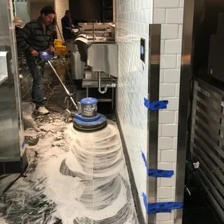

تنظيف المطاعم بالرياض | اشتراطات البلدية وجدول التنظيف اليومي
الزبون يشوف الطاولة والكرسي والمنيو. أما المراقب الصحي فيشوف خلف القلاية، وتحت الثلاجة، وفلتر الشفاط، ودفتر التنظيف. وفي الرياض، مع كثرة المطاعم والكافيهات والمطابخ السحابية، صار تنظيف مطاعم بالرياض جزء من إدارة المطعم اليومية، يمشي كل يوم بغض النظر عن موعد الفحص.
في هالدليل نشرح بصيغة مبسطة وش الأشياء اللي تنتبه لها الجهات الرقابية عادة في موضوع النظافة، ونعطيك جدول تنظيف يومي وأسبوعي وشهري تقدر تطبقه مع فريقك. ونتكلم عن اشتراطات نظافة المطاعم بالرياض بشكل عام، وعن تنظيف مطابخ المطاعم بالرياض بالتفصيل، لأن المطبخ هو المكان اللي يتعب أكثر ويتفتش أكثر.
💡 هالمقال إرشادي ومو بديل عن الاشتراطات الرسمية. البلدية والجهات المختصة تحدث اشتراطاتها من وقت لآخر، فقبل ما تعتمد على أي جدول، راجع الاشتراطات الحالية من القنوات الرسمية للجهة المختصة، واسألهم عن أي بند يخص نشاطك بالذات.
تنظيف مطاعم بالرياض: ليش النظافة أهم من الشكل؟
ممكن يكون عندك ديكور حلو وإضاءة مرتبة وصالة تلمع، والمطبخ من ورا فيه شفاط مليان دهون وأرضية لزجة خلف المعدات. الزبون ما يشوف هالأشياء، لكن ريحتها توصل أحيانًا للصالة، والحشرات تلقى فيها مكان، والمراقب يدور عليها بالذات.
والنظافة في المطعم مرتبطة بسلامة الأكل نفسه. الأسطح اللي يتحضر عليها الأكل، والسكاكين، وألواح التقطيع، والثلاجات، وأيادي العاملين، كلها لها علاقة مباشرة باللي يوصل لصحن الزبون. ولهذا تنظيف مطاعم بالرياض نظام يومي يمشي من قبل ما تفتح لين بعد ما تقفل، ويشمل المطبخ والمخزن مع الصالة. وكل ما كان النظام أوضح، كل ما كان تطبيق اشتراطات نظافة المطاعم بالرياض أسهل عليك وعلى فريقك.
اشتراطات نظافة المطاعم بالرياض: الاشتراطات العامة بصيغة مبسطة
ما بنذكر هنا بنود نظامية ولا أرقام مواد، لأنها تتحدث وتختلف حسب النشاط. لكن فيه مبادئ عامة معروفة في أي مطعم، وهذي أبرزها:
نظافة الأسطح والأرضيات
الأسطح اللي يتحضر عليها الأكل لازم تكون نظيفة ومعقمة حسب تعليمات المنتج، وسهلة التنظيف. والأرضيات بدون تجمع دهون أو ماء أو بقايا أكل، خصوصًا تحت المعدات وخلفها. وفي تنظيف مطاعم بالرياض، الأرضيات اللي تبان نظيفة في الوسط وتحت المعدات وسخة من أكثر الملاحظات اللي تتكرر.
فصل مناطق الخام والمطبوخ
اللحوم والدواجن والأسماك النية لها أسطح وألواح وسكاكين خاصة، والأكل الجاهز له أدوات ثانية. وفي الثلاجات، الخام تحت والجاهز فوق، وكل شي مغطى. وهذا الفصل من أساسيات تنظيف مطابخ المطاعم بالرياض، لأن الخلط هنا مشكلة سلامة قبل ما تكون مشكلة نظافة.
النظافة الشخصية للعاملين
- غسيل اليدين بالماء والصابون قبل الشغل وبعد أي استراحة أو لمس أشياء ثانية
- لبس نظيف، وغطاء للشعر، وقفازات حسب طبيعة الشغل
- أظافر قصيرة ونظيفة، وبدون إكسسوارات على اليدين وقت التحضير
- شهادات صحية سارية للعاملين حسب ما تطلبه الجهة المختصة
- العامل اللي عنده تعب ما يشتغل في تحضير الأكل
وهذي البنود من أكثر الأشياء اللي تتفتش في اشتراطات نظافة المطاعم بالرياض، لأنها تبان من أول دقيقة.
التخزين والتبريد
الثلاجات والفريزرات نظيفة من الداخل، ودرجات حرارتها مضبوطة ومتابعة. والمواد مرفوعة عن الأرض على رفوف، ومغطاة، ومكتوب عليها تاريخ الاستلام أو الفتح. والمنتهي يطلع على طول. وفي اشتراطات نظافة المطاعم بالرياض، التخزين المرتب يعطي انطباع إن المطبخ تحت السيطرة.
التخلص من النفايات
حاويات بأغطية، تتفرغ بانتظام، وتنغسل. ومكان النفايات بعيد عن مناطق التحضير، ونظيف ما يجذب الحشرات. والزيت المستعمل له طريقة تخلص خاصة، ما ينصب في المصارف. وهذا جزء يومي من تنظيف مطاعم بالرياض.
مكافحة الحشرات
المطعم يحتاج برنامج مكافحة منتظم مع جهة مختصة، مع سد الفتحات والشقوق، وشبك على النوافذ، وعدم ترك أكل مكشوف. والنظافة اليومية تقلل اللي يجذب الحشرات، لأنها تدور على بقايا الأكل والدهون والرطوبة. وتوثيق زيارات المكافحة جزء من اشتراطات نظافة المطاعم بالرياض.
سجلات التنظيف
وبعد التنظيف نفسه، تحتاج تقدر تثبت إنك نظفت. سجل بسيط فيه التاريخ والمهمة واسم المسؤول وتوقيعه. وهالسجل يساعدك تتابع فريقك، ويوضح للمراقب إن عندك نظام. وفي تنظيف مطاعم بالرياض، السجل هو اللي يفرق بين مطعم ينظف بالمزاج ومطعم عنده روتين.
ومرة ثانية: هذي مبادئ عامة. الاشتراطات التفصيلية لنشاطك بالذات، سواء مطعم أو كافيه أو مخبز أو مطبخ سحابي، خذها من القنوات الرسمية للجهة المختصة، وراجعها كل فترة لأنها ممكن تتحدث.
جدول التنظيف اليومي المقترح
هذا جدول يومي تقدر تعدله حسب حجم مطعمك وساعات التشغيل. والفكرة إن كل وقت في اليوم له مهامه، عشان ما يتراكم الشغل كله على آخر الليل:
قبل الفتح
- فحص الأسطح وطاولات التحضير ومسحها وتعقيمها حسب تعليمات المنتج
- التأكد إن المعدات نظيفة وجاهزة: القلايات، والشوايات، والأفران، والخلاطات
- فحص درجات حرارة الثلاجات والفريزرات وتسجيلها
- تجهيز مواد التنظيف والفوط والقفازات في أماكنها، وكل مادة بملصقها
- التأكد من توفر الصابون والمناديل عند مغاسل اليدين
- جولة سريعة على الصالة ودورات المياه قبل دخول أول زبون
هالجولة الصباحية تكشف أي شي فات من الليلة اللي قبل، وهي بداية تنظيف مطاعم بالرياض اليومي.
أثناء التشغيل
- مسح الأسطح بعد كل استخدام، خصوصًا بين تحضير الخام والجاهز
- تغيير ألواح التقطيع والسكاكين حسب نوع الأكل
- مسح أي انسكاب على الأرض فورًا عشان ما ينزلق أحد
- تفريغ النفايات لما تمتلي، وما تنتظر آخر الدوام
- مسح طاولات الصالة والكراسي بعد كل زبون
- جولة على دورات المياه كل فترة حسب الزحمة
- غسيل الأواني أول بأول بدل تكديسها
أثناء الذروة صعب تلتزم بكل شي، ولهذا الأفضل يكون فيه شخص مسؤول عن النظافة في كل وردية. وهذا من أبسط أساسيات تنظيف مطابخ المطاعم بالرياض وقت الضغط.
بعد الإغلاق
- تنظيف كل الأسطح والطاولات وتعقيمها
- تنظيف المعدات: الشوايات، وأسطح الطبخ، والقلايات من الخارج، والخلاطات
- تفريغ النفايات كلها وغسيل الحاويات حسب الحاجة
- تنظيف الأحواض والمغاسل والحنفيات
- غسل الأرضيات في المطبخ والصالة، مع تحت المعدات قدر ما تقدر
- تنظيف مصفيات المصارف من بقايا الأكل
- تغطية الأكل المخزن وترتيب الثلاجات
- تعبئة سجل التنظيف اليومي وتوقيعه

تنظيف ما بعد الإغلاق هو أهم وقت في تنظيف مطابخ المطاعم بالرياض، لأن المطبخ فاضي وتقدر توصل لكل مكان. ولو تركته للصباح، الدهون تبرد وتلصق، والحشرات تلقى ليلة كاملة فيها بقايا. وفي تنظيف مطاعم بالرياض، هالساعة الأخيرة هي اللي تحدد كيف يبدأ اليوم الثاني.
محتاج تنظيف احترافي؟
فريقنا ينظف المطعم والمطبخ تنظيف عميق في الأوقات اللي تناسبك، بعد الإغلاق أو في يوم الراحة، عشان ما يتعطل التشغيل ولا ينزعج الزباين
تنظيف مطابخ المطاعم بالرياض: الجدول الأسبوعي والشهري والربع سنوي
فيه أشياء ما تحتاج تنظيف يومي، لكن لو تأخرت عليها تصير مشكلة. وهذي الأماكن هي اللي يدقق فيها المراقب عادة، لأنها تبين هل المطعم يهتم بالعمق أو بالظاهر بس:
الشفاطات والفلاتر
فلاتر الشفاط تمسك الدهون كل يوم. وفي المطاعم اللي تقلي وتشوي كثير، الفلاتر تحتاج غسيل متكرر، غالبًا أسبوعيًا أو أكثر حسب الضغط. أما مجاري الشفط الداخلية فتحتاج تنظيف دوري من جهة مختصة، لأن الدهون المتراكمة فيها مع الوقت ممكن تزيد خطر الاشتعال. وفي تنظيف مطابخ المطاعم بالرياض، الشفاط أكثر شي يكشف هل المطبخ ينظف بعمق أو لا.
الأفران والقلايات
القلايات تحتاج تصفية الزيت وتنظيف الحوض حسب الاستخدام، وتبديل الزيت لما يتغير لونه أو ريحته. والأفران من الداخل تحتاج تنظيف من الدهون المحروقة أسبوعيًا تقريبًا. والشوايات تنفرك يوميًا من فوق، وتنظف بعمق كل أسبوع. وخلف هالمعدات وتحتها من أهم أماكن تنظيف مطاعم بالرياض، لأنها تتجمع فيها دهون وبقايا ما تنشاف.
مصائد الدهون والمصارف
مصيدة الدهون تمنع الزيوت من إنها تروح للمجاري وتسدها. ولو ما انتظفت بانتظام، تطلع ريحة، وتسد المصارف، وتجذب الحشرات. وتكرار تنظيفها يعتمد على حجمها وكمية الطبخ، والأفضل يكون بجدول ثابت مع جهة مختصة. والمصارف في الأرضية تحتاج تنظيف مصفياتها يوميًا، وتنظيف أعمق أسبوعيًا. وهذا من الأماكن اللي تنسى كثير في تنظيف مطابخ المطاعم بالرياض، مع إنها من الأشياء اللي تهتم فيها اشتراطات نظافة المطاعم بالرياض.
الثلاجات والمبردات
الثلاجات اليومية تنمسح من الداخل أسبوعيًا، مع الرفوف والمطاط. وغرف التبريد الكبيرة تحتاج تفريغ جزئي وتنظيف الأرضية والرفوف والجدران بشكل دوري. وشبكات المكثف خلف الثلاجات تجمع غبار ودهون، وتنظيفها يساعد الثلاجة تشتغل أحسن. وفي اشتراطات نظافة المطاعم بالرياض، الثلاجة النظيفة المرتبة من أوضح علامات الاهتمام.
أعلى الخزائن والزوايا
أعلى الخزائن والرفوف العالية، والزوايا بين الجدران والأرضية، وخلف المغاسل. هذي أماكن تتراكم فيها طبقة دهون وغبار بهدوء. خلها في الجدول الأسبوعي أو كل أسبوعين. وفي تنظيف مطاعم بالرياض، الزوايا هي أول مكان يتفقده اللي يبي يعرف مستوى النظافة الحقيقي.
التكييف والتهوية
فتحات التكييف في المطبخ تمسك دهون مع الغبار، وفي الصالة تمسك غبار الرياض. نظف الفتحات والفلاتر شهريًا تقريبًا، ورتب تنظيف داخلي دوري للمكيفات مع فني. والتهوية الجيدة في المطبخ تقلل الرطوبة والدهون اللي تقعد على الأسطح. وهذا جزء من تنظيف مطاعم بالرياض اللي يحس فيه الزبون بدون ما يعرف، لأن ريحة الصالة تتأثر فيه.
مخازن المواد
المخزن الجاف يحتاج ترتيب أسبوعي: المواد على رفوف مرفوعة عن الأرض، والقديم قدام عشان يستخدم أول، والمنتهي يطلع. والأرضية والزوايا تنظف بانتظام، وتراقب علامات الحشرات. وفي اشتراطات نظافة المطاعم بالرياض، المخزن المرتب يقول للمراقب إن المطعم يعرف وش عنده ومتى ينتهي.
جدول مختصر حسب التكرار
| التكرار | المهام |
|---|---|
| يوميًا | الأسطح والطاولات، والمعدات من الخارج، والأرضيات، والأحواض، والنفايات، ومصفيات المصارف، ودورات المياه |
| أسبوعيًا | فلاتر الشفاط، والأفران من الداخل، والثلاجات من الداخل، وأعلى الخزائن والزوايا، وخلف المعدات، والمخزن |
| شهريًا | فتحات التكييف وفلاتره، وغرف التبريد، والجدران والسقف في المطبخ، وشبكات المكثفات |
| كل ثلاثة أشهر تقريبًا | تنظيف عميق شامل للمطبخ، ومراجعة مجاري الشفط ومصائد الدهون مع جهة مختصة، ومراجعة برنامج المكافحة |
والتكرار هنا تقريبي. المطعم اللي يقلي طول اليوم يحتاج تكرار أعلى من كافيه يقدم حلا وقهوة. والمرجع النهائي هو حالة مطبخك والاشتراطات الرسمية.
من المواقف اللي تمر علينا
من المواقف اللي تتكرر معنا في نقاء: صاحب مطعم في الرياض يتواصل وهو مستعجل، يقول إن المطبخ نظيف ويتنظف كل ليلة، بس يحس إن فيه ريحة ما تروح، وإن الشفاط صار صوته أعلى وسحبه أضعف. ولما يجي الفريق ويبدأ يحرك المعدات، يطلع خلف القلايات طبقة دهون متجمعة من شهور، وفلاتر الشفاط مسدودة تقريبًا، ومصيدة الدهون ما انفتحت من فترة طويلة.
والفريق اليومي في المطعم ما كان مقصر في اللي يشوفه. كان ينظف الأسطح والأرضيات قدام المعدات كل يوم. لكن ما كان عنده جدول للأماكن اللي ما تنشاف، ولا وقت يحرك فيه المعدات الثقيلة. وبعد تنظيف عميق في يوم الإغلاق، رجعت الريحة طبيعية، والشفاط صار يسحب أحسن. والأهم إن صاحب المطعم طلع بجدول أسبوعي واضح، بدل ما ينتظر لين تظهر المشكلة. وهذا اللي نقصده لما نقول إن تنظيف مطاعم بالرياض يحتاج طبقتين: يومي يمسكه فريقك، وعميق دوري يوصل للي ما يوصله اليومي. وهالشي يبان أكثر في تنظيف مطابخ المطاعم بالرياض اللي ضغطها عالي.
أخطاء شائعة تضر نظافة المطعم
- الاعتماد على التنظيف السطحي: الأسطح الظاهرة تلمع، وخلف المعدات وتحتها متروك
- إهمال خلف المعدات: القلايات والثلاجات والشوايات ما تتحرك إلا نادرًا، فتتجمع خلفها دهون وبقايا
- عدم توثيق التنظيف: الفريق ينظف لكن ما فيه سجل، فما تعرف وش انتظف ومتى
- خلط مواد التنظيف: خلط الكلور مع منظفات ثانية يطلع أبخرة ضارة، وكل مادة تستخدم لحالها حسب تعليماتها
- نفس الفوطة لكل مكان: فوطة الأرض أو الحمام ما تستخدم على أسطح التحضير
- تأجيل فلاتر الشفاط: أسبوع تأخير في مطعم مقلي يعني طبقة دهون أثقل
- إهمال مصائد الدهون: تسد المصارف وتطلع ريحة
- تخزين المنظفات قريب من الأكل: لازم تكون في مكان منفصل
وأغلب هالأخطاء ما سببها الإهمال، سببها إن ما فيه جدول واضح يوزع المسؤوليات. وفي تنظيف مطاعم بالرياض، الجدول الواضح يحل نص المشاكل قبل ما تبدأ. وفي اشتراطات نظافة المطاعم بالرياض، التوثيق يثبت إن الجدول يتطبق فعلًا. وفي تنظيف مطابخ المطاعم بالرياض، تحريك المعدات الثقيلة بشكل دوري يكشف اللي تحتها قبل ما يكشفه غيرك.
سجل التنظيف: كيف توثق
السجل ما يحتاج برنامج معقد. ورقة معلقة في المطبخ، أو ملف على تابلت، فيه المهام والتاريخ والمسؤول. والمهم إنه يتعبى في وقته، لأن التعبئة آخر الأسبوع من الذاكرة ما تعكس اللي صار. وهذا نموذج بسيط تقدر تنقله لورقة:
| المهمة | التكرار | التاريخ | الوقت | المسؤول | التوقيع |
|---|---|---|---|---|---|
| تعقيم أسطح التحضير | يومي | ||||
| تسجيل حرارة الثلاجات | يومي | ||||
| غسل أرضية المطبخ | يومي | ||||
| تفريغ وغسيل حاويات النفايات | يومي | ||||
| تنظيف دورات المياه | حسب الجدول | ||||
| غسيل فلاتر الشفاط | أسبوعي | ||||
| تنظيف الثلاجات من الداخل | أسبوعي | ||||
| تنظيف خلف المعدات | أسبوعي | ||||
| فتحات وفلاتر التكييف | شهري | ||||
| زيارة مكافحة الحشرات | حسب العقد |
وخل المدير أو المشرف يراجع السجل كل يوم أو يومين، ويوقع عليه. ولما يكون فيه زيارات من جهات خارجية، مثل المكافحة أو تنظيف الشفاطات، احفظ تقاريرهم مع السجل. وهذا يخلي اشتراطات نظافة المطاعم بالرياض موثقة عندك بشكل مرتب. وفي تنظيف مطاعم بالرياض، السجل يساعدك تكتشف المهام اللي تتأجل أكثر من غيرها.
أدوات ومواد التنظيف داخل المطعم
المواد الغلط ممكن تخرب الأسطح، أو تترك بقايا على أماكن يلامسها الأكل. وفي تنظيف مطاعم بالرياض، الأدوات لها ترتيب واضح:
- فوط وإسفنج بألوان مختلفة: لون لأسطح التحضير، ولون للصالة، ولون لدورات المياه، ولون للأرضيات
- منتجات تنظيف وتعقيم مكتوب على ملصقها إنها مناسبة لأسطح الأكل، وتستخدم حسب تعليماتها
- مزيل دهون مخصص للمطابخ التجارية للشفاطات والأفران
- فرش للمصارف والزوايا، وممسحات منفصلة للمطبخ والصالة
- مكان تخزين للمنظفات بعيد عن الأكل والأواني، وكل منتج في علبته الأصلية بملصقه
والأفضل تحط لوحة صغيرة فيها ألوان الفوط ومكان كل لون، عشان العامل الجديد يعرف من أول يوم. وهذا يخلي تنظيف مطابخ المطاعم بالرياض أسهل وأأمن، لأن ما فيه أدوات تنتقل من الحمام للمطبخ.
تدريب الفريق على النظافة
أفضل جدول ما يشتغل إذا الفريق ما يعرفه أو ما يفهم ليش موجود. وكثير من المطاعم في الرياض فيها دوران موظفين عالي، فكل شهر فيه وجوه جديدة. والتدريب البسيط يفرق:
- شرح الجدول اليومي لكل موظف جديد في أول يوم
- توضيح سبب فصل الخام عن الجاهز
- طريقة غسيل اليدين الصحيحة ومتى
- كيف يعبي سجل التنظيف ويوقع عليه
- وش يسوي لو لاحظ حشرات أو تسريب أو عطل في ثلاجة
ولما يفهم الموظف السبب، يلتزم أكثر حتى لو ما أحد يراقبه. وهذا يخلي اشتراطات نظافة المطاعم بالرياض شي يطبقه الفريق من نفسه. ويخلي تنظيف مطابخ المطاعم بالرياض اليومي أسرع، لأن كل واحد يعرف دوره.
المطاعم في رمضان والمواسم
في رمضان والأعياد والإجازات، يتغير التشغيل في أغلب مطاعم الرياض. ساعات الذروة تتأخر، والطلبات تزيد، والفريق يشتغل تحت ضغط أعلى. وهنا يحتاج تنظيف مطاعم بالرياض ترتيب مختلف:
- تنظيف عميق للمطبخ قبل بداية الموسم بأيام، عشان تبدأ من نقطة نظيفة
- زيادة تكرار غسيل فلاتر الشفاط مع زيادة القلي
- جدول تنظيف يتماشى مع ساعات التشغيل الجديدة، خصوصًا بعد السحور
- متابعة النفايات أكثر، لأن كميتها تزيد
- مراجعة برنامج المكافحة قبل الموسم
وبعد الموسم، تنظيف عميق ثاني يرجع المطبخ لوضعه. وفي تنظيف مطابخ المطاعم بالرياض، الموسم الطويل بدون تنظيف عميق في نصه أو بعده يترك تراكم واضح. والمواسم كمان وقت مناسب تراجع فيه اشتراطات نظافة المطاعم بالرياض وتتأكد إن ما فيه تحديثات فاتتك.
تجهيز المطعم قبل الافتتاح أو بعد إغلاق طويل
المطعم الجديد، أو اللي رجع بعد صيانة أو تجديد أو إغلاق فترة، يحتاج تنظيف شامل قبل أول يوم تشغيل. وبعد أعمال الصيانة غالبًا يكون فيه غبار ناعم على كل سطح، وبقايا تركيبات، ومعدات جديدة تحتاج تنظيف قبل الاستخدام حسب تعليماتها. وفي تنظيف مطابخ المطاعم بالرياض قبل الافتتاح، ركز على:
- تنظيف المعدات الجديدة من الداخل والخارج قبل أول استخدام
- الجدران والسقف والإضاءة في المطبخ
- الأرضيات بالمكاين، مع الزوايا وتحت المعدات
- الثلاجات وغرف التبريد قبل تعبئتها
- المصارف ومصائد الدهون
- الصالة ودورات المياه والواجهات
والتنظيف هنا يكون بعد ما يطلع آخر عامل صيانة. وفي تنظيف مطاعم بالرياض، أول يوم تشغيل بمطبخ نظيف تمامًا يسهل على فريقك يحافظ على المستوى بعدين.
محطات غسيل اليدين
مغسلة اليدين في المطبخ لها شغل واحد: غسيل اليدين. ما تنغسل فيها خضار ولا أواني، وما تتعبى بأغراض. خلها قريبة من مناطق التحضير، وفيها صابون ومناديل ورقية دايمًا، وسلة بجنبها. ونظفها مع باقي الأحواض بعد الإغلاق. ولو العامل لازم يمشي مسافة عشان يغسل يدينه، غالبًا بيأجل، فمكانها يفرق في الالتزام.
منطقة استلام البضائع
البضاعة توصل في كراتين مرت على مخازن وسيارات، وممكن يكون عليها غبار أو حشرات صغيرة. خصص مكان للاستلام قريب من الباب الخلفي، وافحص البضاعة قبل ما تدخل المخزن: التواريخ، وسلامة التغليف، ودرجة حرارة المبرد منها. وفضّ الكراتين في منطقة الاستلام بدل ما تدخلها المطبخ، وتخلص منها أول بأول. ونظف المنطقة نفسها يوميًا، لأنها أول نقطة ممكن يدخل منها شي غير مرغوب.
الزيت المستعمل
زيت القلي المستعمل ما ينصب في المغاسل ولا المصارف، لأنه يبرد ويتجمد داخل المواسير ويثقل على مصيدة الدهون. جمعه في حاويات مخصصة مقفلة، وخزنها في مكان بعيد عن التحضير لين تستلمها الجهة اللي تجمع الزيوت. وامسح أي انسكاب حول الحاويات على طول، لأن الأرضية الدهنية خطر انزلاق ومصدر ريحة.
لو لاحظت علامات حشرات
لو شفت صرصور أو آثار قوارض أو فضلات في زاوية، لا ترش مبيد بنفسك داخل المطبخ. تواصل مع جهة المكافحة المتعاقد معها، ونظف المكان من بقايا الأكل، وغط الأكل المكشوف، وسجل الملاحظة في دفترك. وبعد الرش، اتبع تعليمات جهة المكافحة في التنظيف وموعد رجوع التشغيل. والأهم إنك تدور على السبب: فتحة ما انسدت، أو أكل يبقى برا الثلاجة، أو زاوية ما تنظف.
الأواني وأدوات التقديم
الصحون والكاسات والملاعق توصل لفم الزبون مباشرة، فغسيلها جزء أساسي من النظافة. لو عندك غسالة صحون تجارية، شغلها حسب تعليمات الشركة المصنعة، ونظف فلاترها وأذرعها بانتظام، وتأكد إن حرارة الماء والمنظف مضبوطة. ولو الغسيل يدوي، خل فيه ترتيب واضح: إزالة البقايا، ثم الغسيل بالصابون، ثم الشطف، ثم التعقيم حسب تعليمات المنتج، ثم التنشيف في الهوا على رفوف نظيفة. والأواني المشروخة أو المكسورة تطلع من الخدمة، لأن الشروخ تمسك الأوساخ.
المرايل والفوط والزي
مرايل الطباخين وفوط المطبخ وأقمشة التنظيف تمسك دهون وبقايا أكل خلال اليوم. خل عندك عدد كافي يتبدل في كل وردية، وغسيل منتظم بماء حار حسب ملصق القماش. والفوطة اللي تستخدم في مسح الأرض ما ترجع لسطح التحضير أبد. وخصص مكان للزي النظيف بعيد عن المستعمل، عشان ما يختلطون في غرفة الموظفين.
المطاعم اللي تشتغل ساعات طويلة
بعض المطاعم في الرياض تشتغل لين الفجر أو طول اليوم، فما فيه وقت إغلاق ثابت للتنظيف. هنا الحل إنك تقسم المطبخ لمناطق، وتنظف كل منطقة في أهدأ وقت لها، وتخلي التنظيف العميق في أقل يوم ضغط في الأسبوع. والتوثيق هنا أهم من أي مطعم ثاني، لأن الورديات كثيرة وكل وردية لازم تعرف وش خلصت اللي قبلها.
غرفة الموظفين ودوراتهم
غرفة استراحة الموظفين ودورات المياه الخاصة فيهم تنسى كثير، لأنها بعيدة عن الزبون. لكنها مكان يدخل منه العامل للمطبخ مباشرة، فنظافتها تأثر على نظافته الشخصية. خلها في الجدول اليومي: مسح الأسطح، وتفريغ السلال، وتوفير الصابون والمناديل، وتنظيف الحمام. وامنع الأكل في المطبخ نفسه، وخل الأكل والشرب في غرفة الاستراحة بس، عشان ما تختلط أغراض الموظفين بمناطق التحضير.
الواجهة والمدخل
الواجهة الزجاجية والباب ومقبضه أول شي يلمسه الزبون. وغبار الرياض يقعد على الزجاج بسرعة، خصوصًا بعد العواصف. امسح الزجاج من الداخل يوميًا، ومقبض الباب أكثر من مرة في اليوم، والدواسة نظفها أو بدلها حسب الحاجة. ومنطقة الانتظار والكراسي اللي برا لو موجودة، خلها في جولة الصالة.
جولة تفتيش داخلية أسبوعية
خل المدير أو المشرف يسوي جولة أسبوعية كأنه مراقب من برا: يفتح الثلاجات ويشيك على الترتيب والتواريخ، ويشوف خلف المعدات بكشاف الجوال، ويفتح مصفيات المصارف، ويرفع فلتر شفاط ويشوف كم فيه دهون، ويقرأ السجل ويتأكد إنه متعبي. ويكتب الملاحظات ويتابع إصلاحها في نفس الأسبوع. هالجولة تاخذ نص ساعة، لكنها تكشف المشاكل الصغيرة قبل ما تكبر. وغيّر يوم الجولة ووقتها من أسبوع لأسبوع، عشان تشوف المطبخ على حقيقته في أوقات ما يتوقعها الفريق، وتلاحظ الفرق بين الورديات. واكتب نتيجة كل جولة في نفس سجل التنظيف، عشان تقارن بين الأسابيع وتعرف هل الملاحظات تقل أو تتكرر.
الكافيهات والمطابخ السحابية
الكافيه ما فيه قلي كثير، لكن فيه مكاين قهوة، وخلاطات، وثلاجات حلا، وأسطح تنلمس كثير. ومكينة القهوة نفسها تحتاج تنظيف يومي حسب تعليمات الشركة المصنعة، ومسح أداة البخار بعد كل استخدام. أما المطبخ السحابي، فما فيه صالة، لكن فيه ضغط طلبات عالي، وأكثر من علامة تجارية أحيانًا في نفس المطبخ. وهنا تنظيف مطابخ المطاعم بالرياض يحتاج تقسيم واضح بين المحطات، وكل محطة لها أدواتها. وفي الحالتين، نفس المبادئ: فصل الخام عن الجاهز، والنظافة الشخصية، والتوثيق. وتنظيف مطاعم بالرياض للكافيهات يركز على الصالة والكاونتر أكثر، وللمطابخ السحابية يركز على المطبخ ومنطقة تسليم الطلبات.
الصالة ودورات المياه
الصالة هي اللي يحكم عليها الزبون، ودورات المياه بالذات تعطيه انطباع عن المطبخ اللي ما يشوفه. ولو كان الحمام مهمل، بيفكر إن المطبخ أسوأ. وفي تنظيف مطاعم بالرياض، الصالة تحتاج:
- مسح الطاولات والكراسي بعد كل زبون، مع أرجل الكراسي من فترة لفترة
- تنظيف المنيو والقوائم اللي تنلمس كثير
- الأرضيات تحت الطاولات وفي الزوايا
- الزجاج والواجهات من الداخل
- دورات المياه: جولات متكررة، وصابون ومناديل متوفرة، وسلة تتفرغ
ودورات المياه في المطاعم من الأماكن اللي تذكرها اشتراطات نظافة المطاعم بالرياض عادة ضمن النظافة العامة. فخل لها جدول جولات واضح، وسجل بسيط على بابها من الداخل لو تبي.
متى تحتاج الاستعانة بفريق تنظيف متخصص؟
فريقك اليومي يقدر يمسك التنظيف اليومي وأغلب الأسبوعي. لكن فيه شغل يحتاج وقت ومعدات وخبرة غير متوفرة عادة داخل المطعم:
- التنظيف العميق الدوري: تحريك المعدات الثقيلة، وجلي الأرضيات بالمكاين، وتنظيف الجدران والسقف
- قبل الافتتاح، أو عند العودة بعد إغلاق أو صيانة أو تجديد
- الشفاطات المليانة دهون والمجاري اللي ما انتظفت من فترة
- المطابخ الكبيرة اللي فريقها ما يلحق على كل شي بعد يوم طويل
- بعد ملاحظة من جهة رقابية تحتاج تتصلح بسرعة
في هالحالات، تقدر تتعاون مع شركة تنظيف بالرياض تجي في الأوقات اللي تناسبك، بعد الإغلاق أو في يوم الراحة، وتشتغل على اللي ما يوصله التنظيف اليومي: خلف المعدات وتحتها، والأرضيات بالمكاين، والأسطح العالية، والثلاجات من الداخل، ودورات المياه بعمق. وتنظيف مجاري الشفط ومصائد الدهون يتنسق مع جهة متخصصة فيها لو احتاج.
وفي مؤسسة نقاء للتنظيف، تنظيف مطاعم بالرياض العميق يتنسق حسب جدول تشغيلك، عشان ما يتأثر الدوام ولا الزباين. وقبل ما يطلع الفريق، تراجع المطبخ معهم، وتسجل التنظيف العميق في سجلك. وكذا يكون تنظيف مطابخ المطاعم بالرياض الدوري جزء ثابت من نظامك، واشتراطات نظافة المطاعم بالرياض اللي تطبقها يوميًا عندك أساس نظيف تبني عليه. والتنظيف العميق ما يضمن نتيجة أي فحص، لكنه يعطيك بداية نظيفة يمسكها فريقك بعدين.
أسئلة شائعة عن نظافة المطاعم
الخاتمة
نظافة المطعم في الرياض شغل يومي يستمر طول السنة. جدول قبل الفتح وأثناء التشغيل وبعد الإغلاق، وجدول أسبوعي وشهري للأماكن اللي ما تنشاف، وسجل يوثق كل شي. ومع مراجعة الاشتراطات الرسمية من الجهة المختصة، يكون مطعمك جاهز في أي يوم.
ولو تحتاج تنظيف عميق دوري، فريق مؤسسة نقاء يخدم كل أحياء الرياض، وينسق معك موعد يناسب تشغيلك، وتراجع الشغل معه قبل ما يطلع.
✨ تنظيف عميق للمطعم بعيد عن أوقات التشغيل
نسق معنا موعد معاينة، ونرتب تنظيف عميق للمطعم والمطبخ في وقت يناسب تشغيلك
محتاج تنظيف احترافي؟
تواصل معنا لتنسيق موعد معاينة وتنظيف لمطعمك في الوقت اللي يناسبك
- تنظيف بعد الإغلاق أو في يوم الراحة
- خلف المعدات وتحتها والأرضيات بالمكاين
- الصالة ودورات المياه والثلاجات
- خدمة في كل أحياء الرياض